Zika Vírus é uma arbovirose (doença causada por vírus) que possui
transmissão em mais de 23 países, alguns deles são: Colômbia,
El Salvador, Cabo Verde, Honduras e Brasil.
Uma característica preocupante relacionada à doença é a associação
com os casos de microcefalia nos bebês nascidos de mães infectadas
durante a gravidez. Além disso, o vírus da Zika também foi associado
às complicações neurológicas da síndrome de Guillain-Barré (SGB).
O vírus da Zika pertence ao gênero Flavivirus, da mesma forma que o vírus da dengue. Em 2015, o vírus recebeu uma atenção redobrada, por conta da rápida disseminação da doença em diversas áreas. Mesmo após a diminuição de casos, esse vírus ainda continua circulando em muitas regiões.
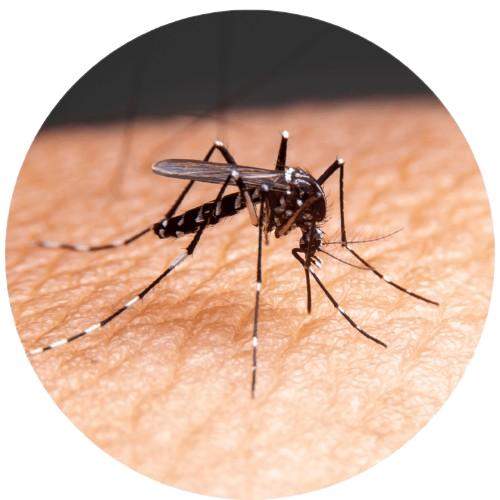
Fonte: Canva (2022)
Vetor da doença
Aedes aegypti
Reino: Animalia Filo: Arthropoda Classe: Insecta Ordem: Diptera Família: Culicidae Gênero: Aedes Espécie: Aedes aegypti
Sobre ele:
O Aedes aegypti é conhecido por ser um vetor de várias doenças, incluindo a
dengue, a febre amarela, a chikungunya e o vírus Zika. Essas doenças representam
um sério problema de saúde pública em várias regiões tropicais e subtropicais do mundo.
O Aedes albopictus, também conhecido como mosquito-tigre, é outro
mosquito importante em termos de saúde pública. Essa espécie, assim
como o Aedes aegypti, são considerados vetores importantes dessas doenças,
pois se alimentam de sangue humano
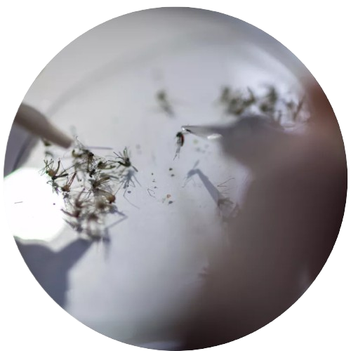
Fonte: Zibra/Divulgação/Nuno Faria (2017)
Transmissão
Através do vetor
A forma mais comum é por meio da picada da fêmea do mosquito transmissor
(do gênero Aedes).
Transmissão vertical
A Zika pode ser transmitida da mãe para o feto durante a gravidez. Isso
pode gerar complicações para o feto, incluindo a microcefalia e outras
anomalias neurológicas.
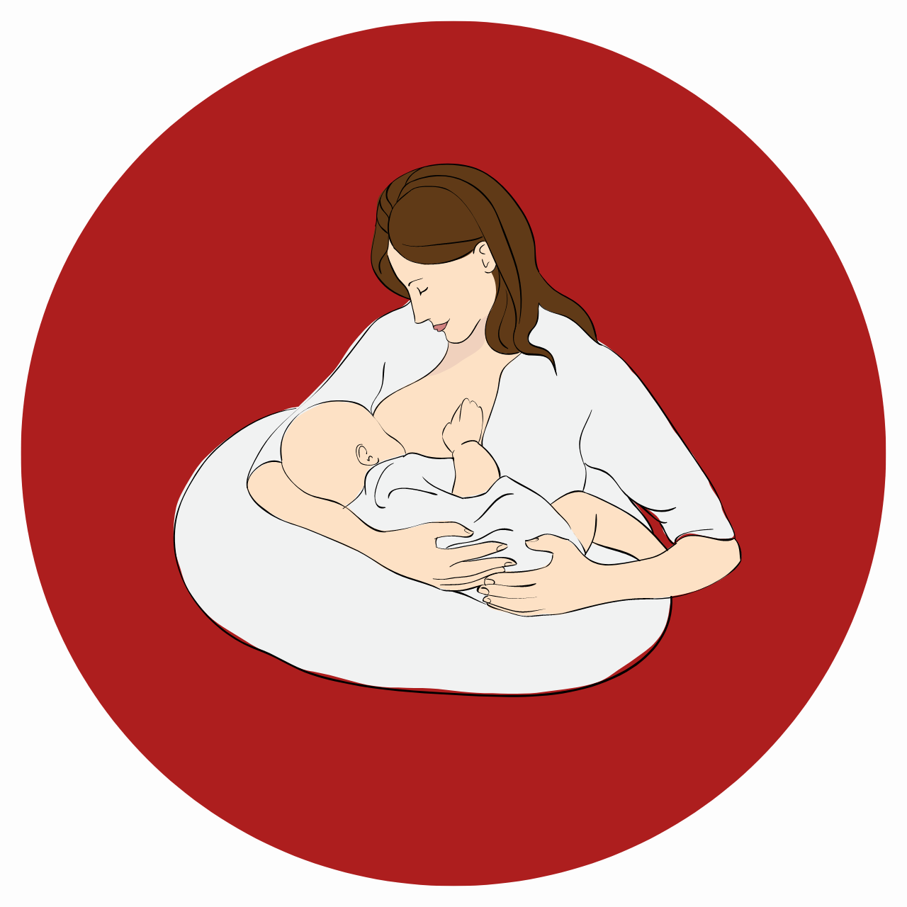
Transmissão pelo leite materno
É uma forma rara, porém a transmissão através do leite materno também
é possível.
Transmissão sexual
O vírus da doença pode ser transmitido através de relações sexuais desprotegidas.
Portanto, usem preservativos!
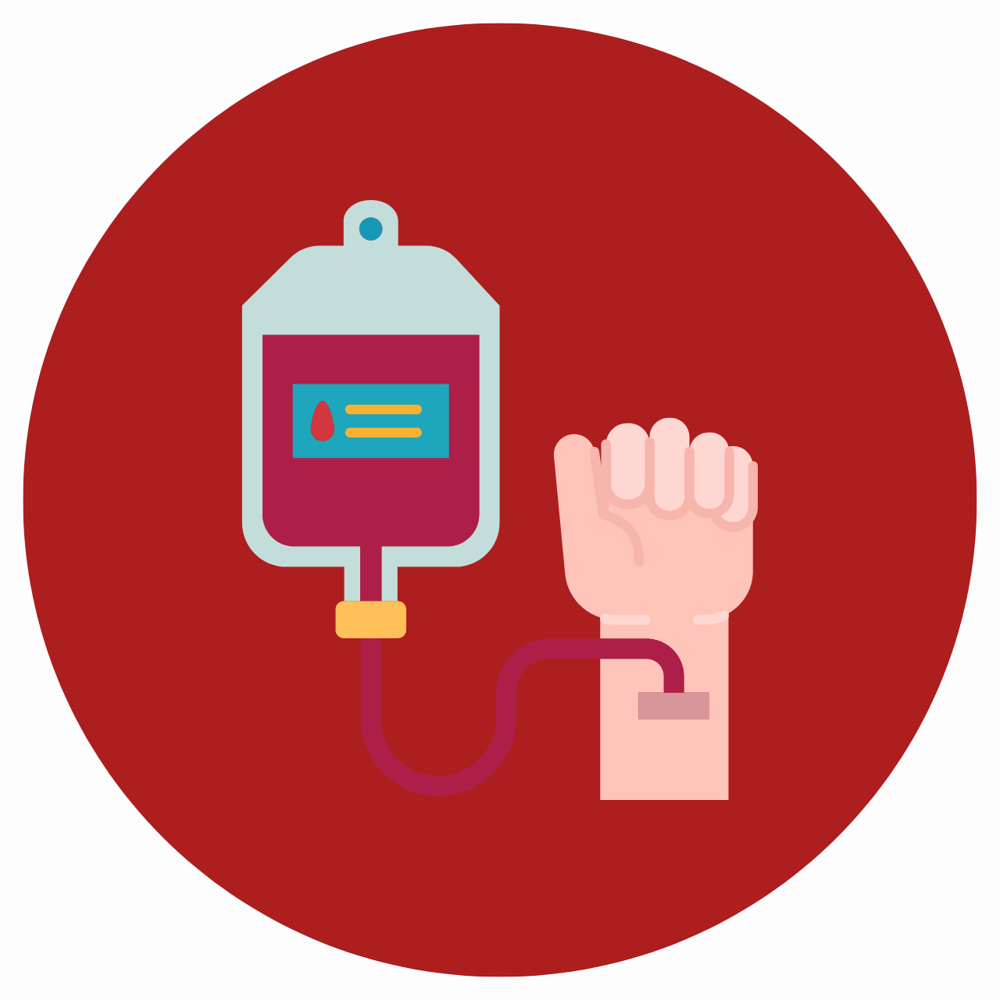
Transfusão sanguínea
Também é uma forma rara de transmissão, porém a doença pode ser transmitida
por meio da transfusão de sangue de doadores infectados.
Transmissão por contato
É uma forma menos comum, mas pode ocorrer por contato direto com sangue
ou outros fluidos corporais de uma pessoa infectada.
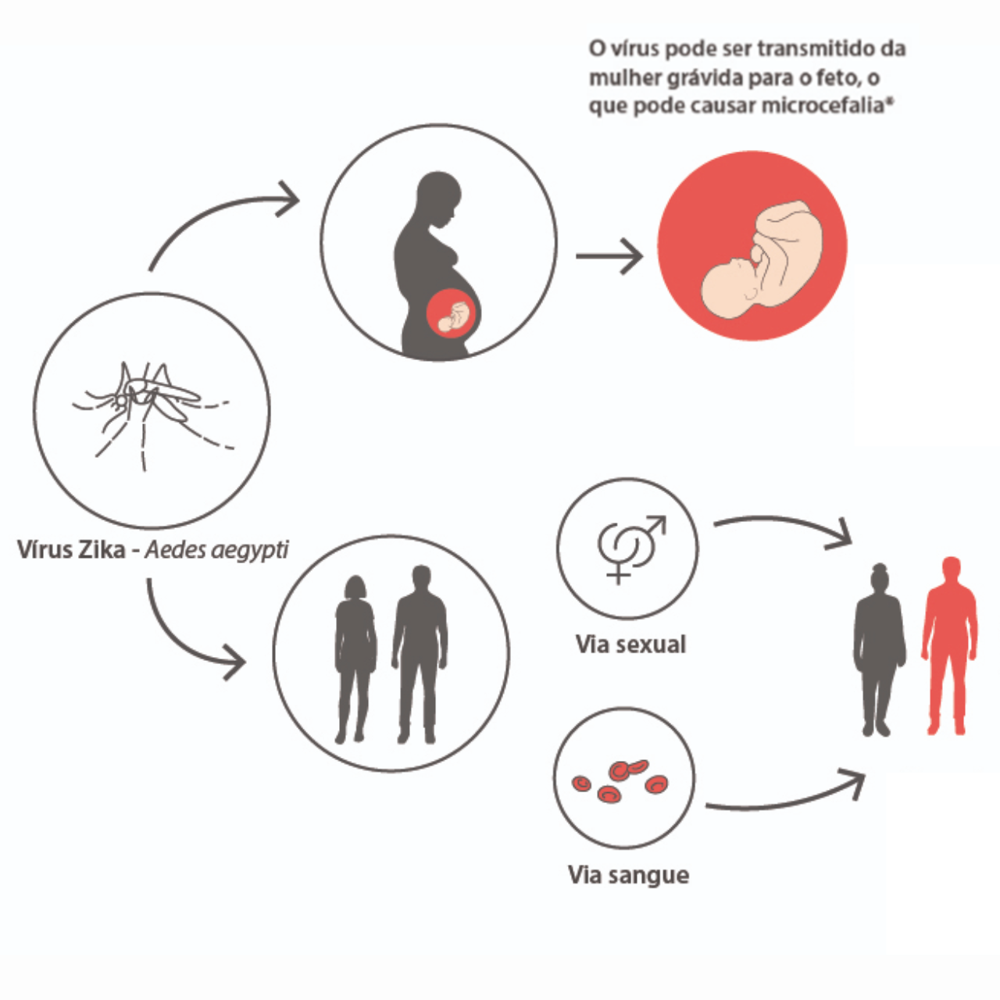
Fonte: Fundação Altino Ventura (2020)
Ciclo da doença
Infecção no ser humano
Uma pessoa é infectada pelo vírus da Zika quando é picada por um mosquito infectado.
Após a picada, em cerca de 2 a 7 dias os sintomas começam a aparecer.
Mosquito transmissor
O mosquito saudável, ao picar uma pessoa infectada com o vírus da doença, passa
a ser infectado. Dessa forma, o vírus começa sua replicação no interior do
mosquito.
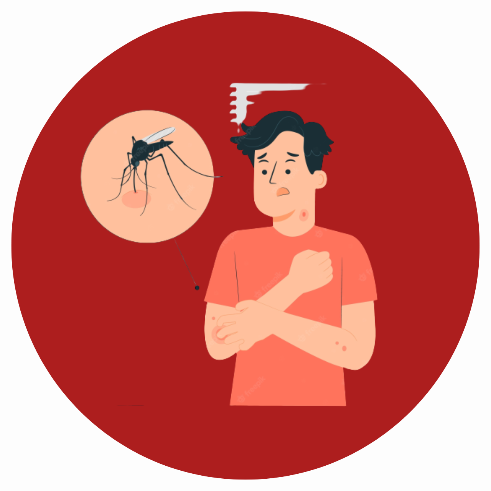
Disseminação
O mosquito infectado pica uma pessoa saudável e transmite o vírus. A pessoa
infectada pode transmitir o vírus por contato, por relações sexuais desprotegidas,
por transfusão de sangue e para o feto, caso seja uma mulher grávida. E assim,
reinicia o ciclo.
Sintomas da zika
O maior número de infecções pelo ZIKV são assintomáticos, mas quando são sintomáticos podem apresentar alguns desses sintomas:
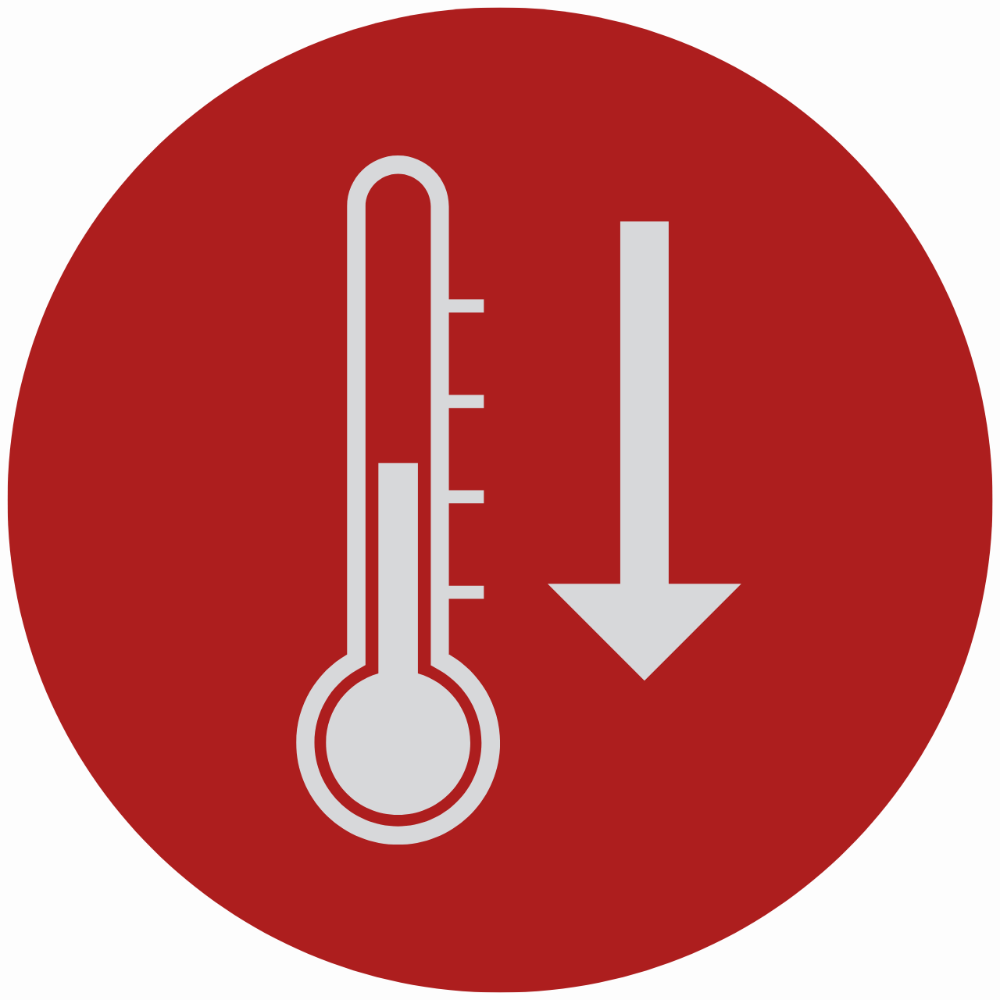
Febre baixa
A pessoa infectada pode apresentar febre baixa, geralmente entre 37,8°C e 38,5°C.
Manchas no corpo
São manchas vermelhasque podem começar no rosto e se espalhar para o resto do corpo.
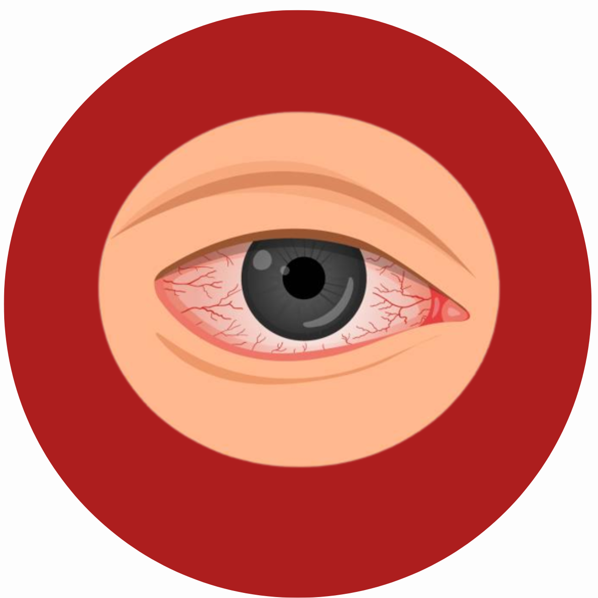
Conjuntivite
Os olhos costumam ficar avermelhados e irritados, e não há secreção amarelada.
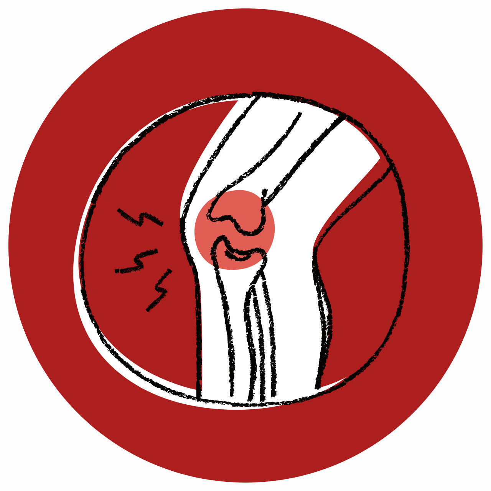
Dores articulares
Ocorrem principalmente nas articulações das mãos e dos pés.
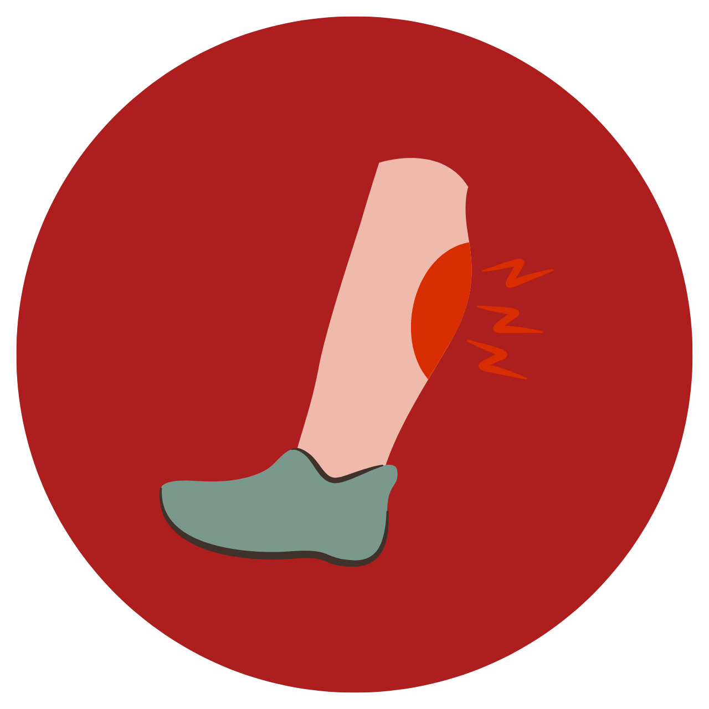
Dores musculares
Conhecida como mialgia, pode afetar diferentes partes do corpo.
Outros sintomas
Fadiga, mal-estar, dor de garganta, inflamação dos gânglios linfáticos, etc.
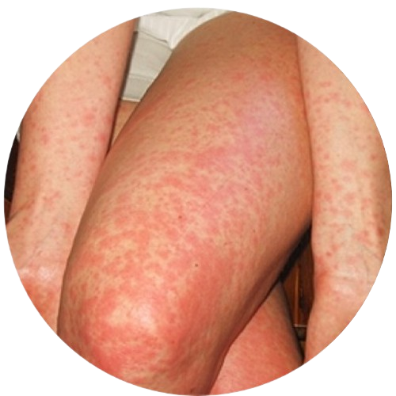
Fonte: Sociedade Portuguesa de Beneficência de Santos (2016)
Tratamento
Não há um tratamento específico e nem vacina contra o vírus da zika. O tratamento
para as pessoas sintomáticas são:
Uso de antitérmicos
Para auxiliar as dores de cabeça, como paracetamol e dipirona.
Uso de anti-inflamatórios
Esses devem ser livres de acetilsalicílico (AAS), devido aos riscos de
hemorragias descritas nas infecções por flavivírus.
Medidas profiláticas
Algumas ações que incluem o controle da população dos vetores ou a contaminação da doença são:
1
Eliminar focos de água parada
2
Redução de criadouros de mosquitos
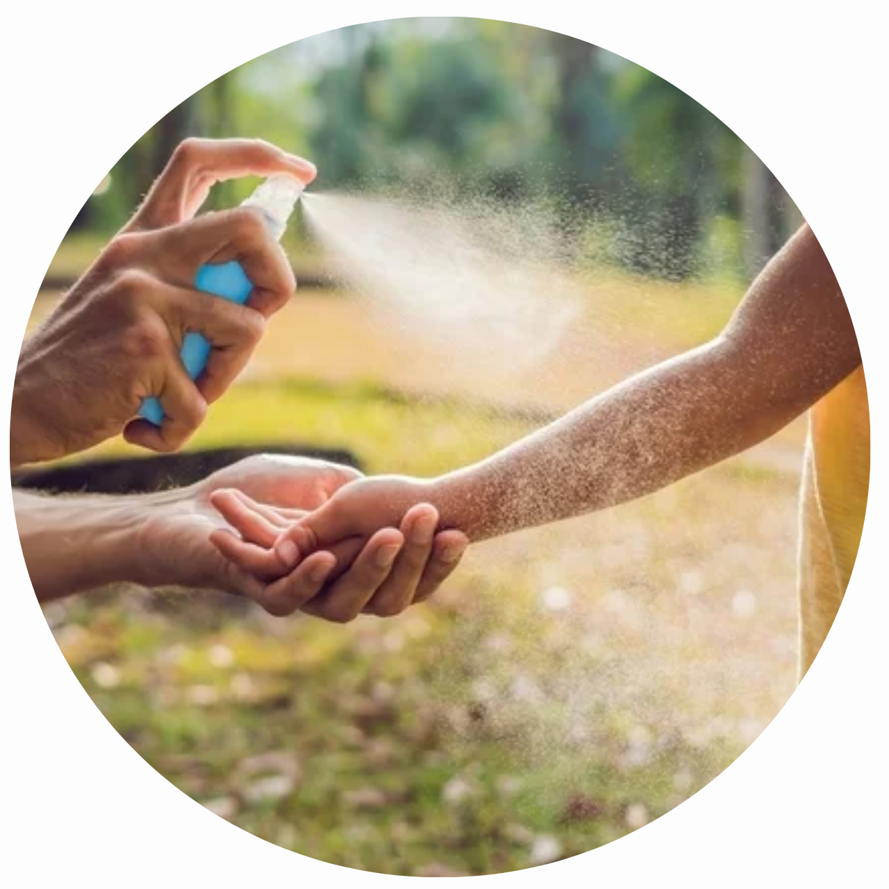
3
Uso de repelentes
4
Uso de roupas protetoras
5
Manter janelas com telas de proteção
6
Usar mosquiteiros em berços e camas
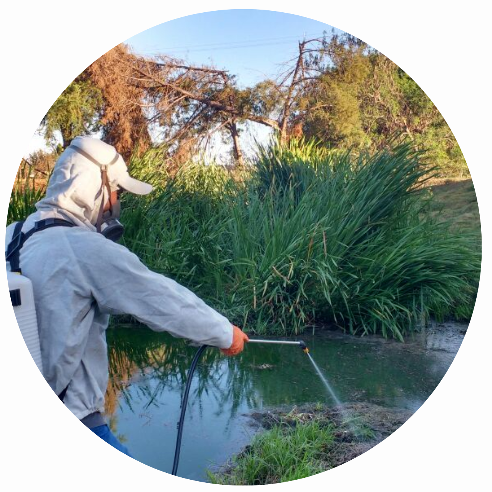
7
Aplicar larvicidas em possíveis criadouros
8
Remover folhas que atrapalham o escoamento da água
Veja quais países têm mais casos registrados de zika depois do Brasil. Disponível em: https://g1.globo.com/bemestar/noticia/2016/01/veja-quais-paises-tem-mais-casos-registrados-de-zika-depois-do-brasil.html. Acesso em: 12 maio 2023.
Referências das medidas profiláticas:
Medida 1: Carlos Solek (2021)
Medida 2: Reprodução/TV TEM (2019)
Medida 3: Getty Images/Reprodução (2022)
Medida 4: Freepik (2019)
Medida 5: Freepik (2022)
Medida 6: Angela Peres/Secom/Governo do Estado do Acre (2017)